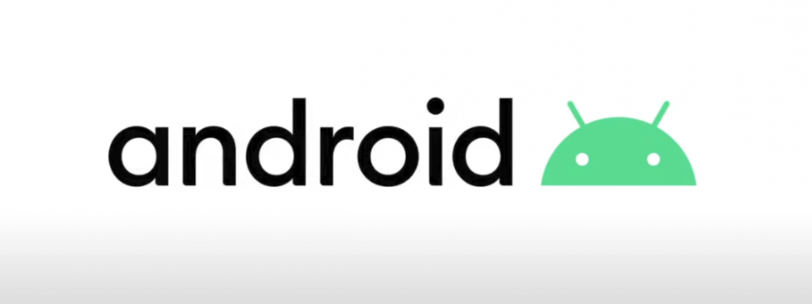
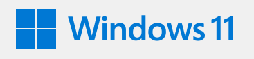
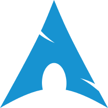
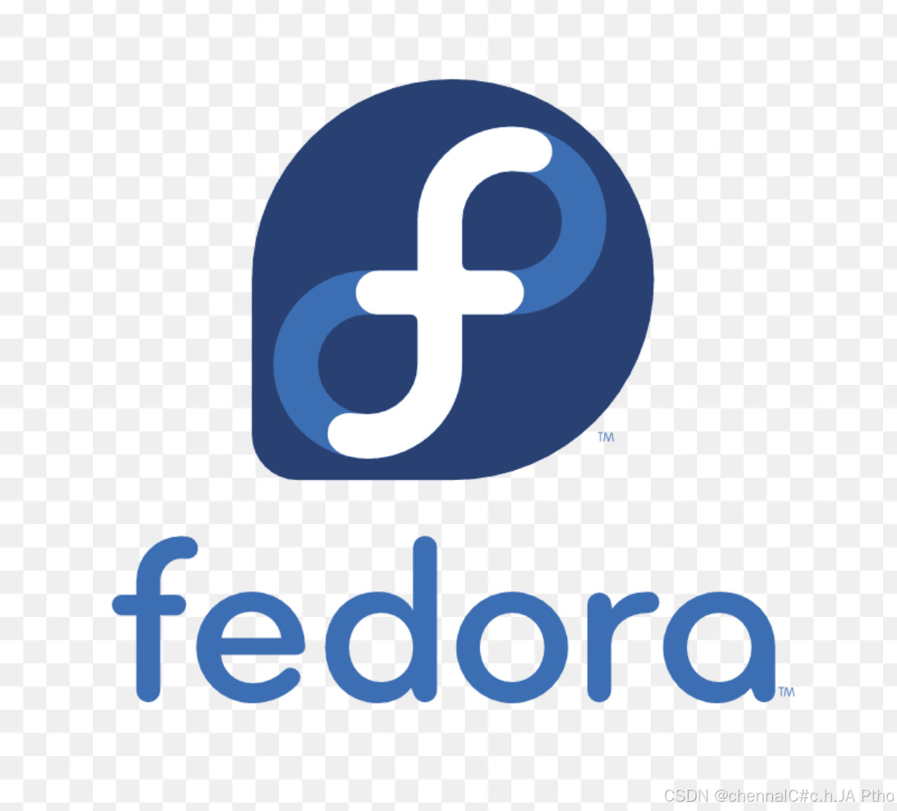
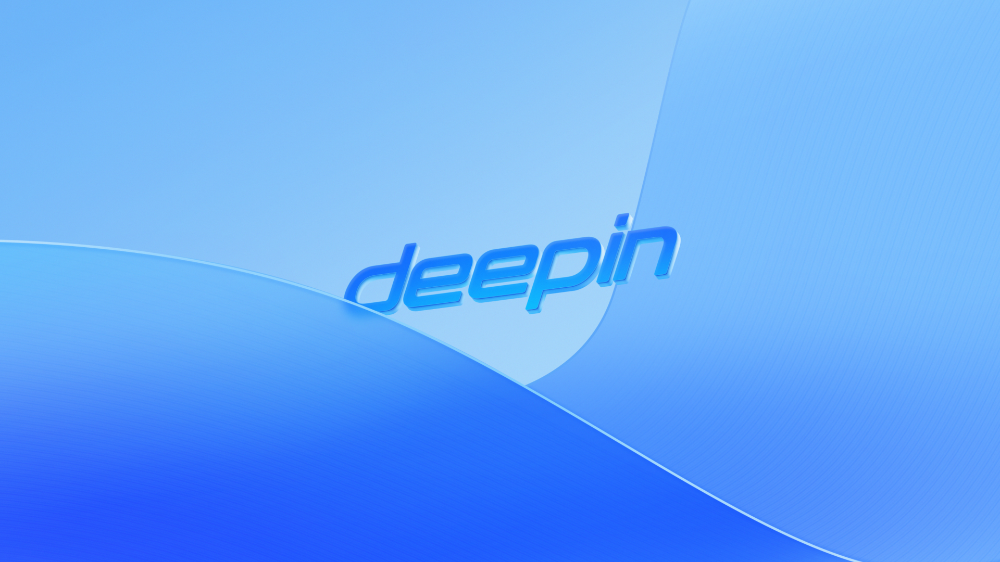
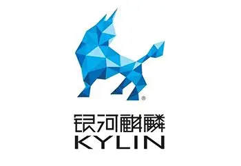
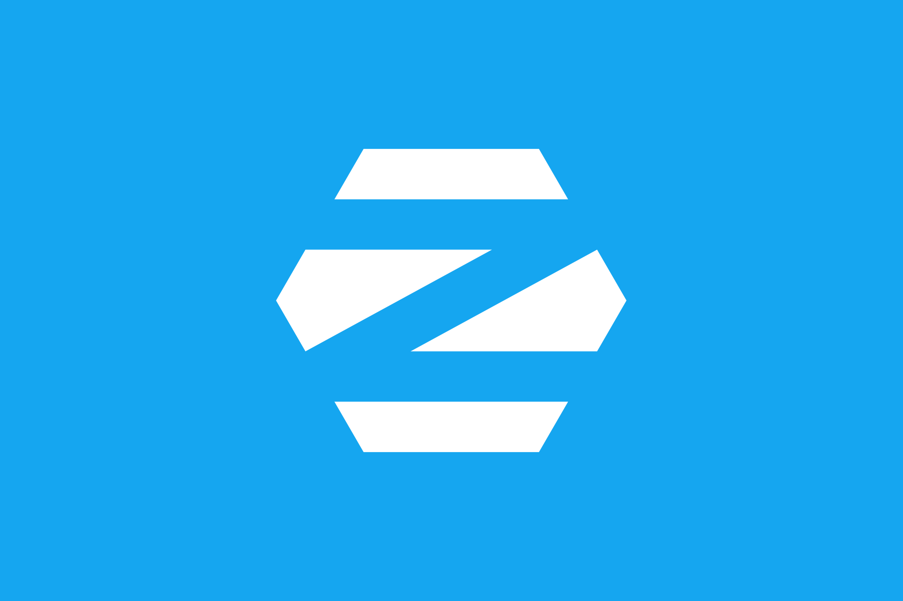

折腾电脑
喜欢研究硬件、优化系统、探索各种软件工具，把电脑调教成最适合自己的样子。
热爱折腾，享受把未知变成已知的过程。
喜欢研究硬件、优化系统、探索各种软件工具，把电脑调教成最适合自己的样子。
从安卓 ROM 到各类操作系统，享受解锁、刷入、配置、跑通的全过程。
对新技术保持好奇，遇到不懂的就查、就试、就学，乐在其中。
自由、开放、可折腾，安卓精神一直是我折腾路上的最大动力。

Android · 我最常折腾的系统，动手能力的主战场。

Windows · 日常开发与折腾的主阵地，Windows 11 也是我熟悉的版本。

Arch · 滚动更新、深度定制，折腾人的 Linux 信仰。
Ubuntu · 折腾路上的老朋友，用它部署一些东西再合适不过。

Fedora · 非常开放，我在上面装了各种主题。
Debian · 稳定、纯粹的开源基石，无数发行版的老祖先。

Deepin · 国产生态里最漂亮的桌面，体验拉满。

Kylin · 国产操作系统的代表，政企办公里见得多。

Zorin OS · 给 Windows 用户量身打造的 Linux 桌面。
「这个网站不是全部，大部分事情和成果没显示。这里只是我想展示的一角，更多还在路上。」
扫码添加微信，期待和你一起折腾、一起交流。

扫一扫 · 即刻联系